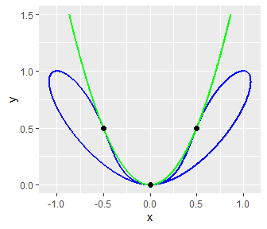

An application of the resultant
I will soon release an update of qspray on CRAN as well as a new package: resultant. This post shows an application of these two packages.
Consider the two algebraic curves \(f(x,y)=0\) and \(g(x,y)=0\) where \[ f(x, y) = y^4 - y^3 + y^2 - 2x^2y + x^4 \quad \text{ and } \quad g(x, y) = y - 2x^2. \] We will derive their intersection points. First of all, let’s plot them.
f <- function(x, y) {
y^4 - y^3 + y^2 - 2*x^2*y + x^4
}
g <- function(x, y) {
y - 2*x^2
}
# contour line for f(x,y)=0
x <- seq(-1.2, 1.2, len = 2000)
y <- seq(0, 1, len = 2000)
z <- outer(x, y, f)
crf <- contourLines(x, y, z, levels = 0)
# contour line for g(x,y)=0
x <- seq(-1, 1, len = 2000)
y <- seq(0, 1.5, len = 2000)
z <- outer(x, y, g)
crg <- contourLines(x, y, z, levels = 0)Theoretically there is only one contour line for both. But for some technical reasons, crf is split into several pieces:
length(crf)
## [1] 16So we need a helper function to construct the dataframe that we will pass to ggplot2::geom_path:
intercalateNA <- function(xs) {
if(length(xs) == 1L) {
xs[[1L]]
} else {
c(xs[[1L]], NA, intercalateNA(xs[-1L]))
}
}
contourData <- function(cr) {
xs <- lapply(cr, `[[`, "x")
ys <- lapply(cr, `[[`, "y")
data.frame("x" = intercalateNA(xs), "y" = intercalateNA(ys))
}
datf <- contourData(crf)
datg <- contourData(crg)I also plot the intersection points that we will derive later:
datPoints <- data.frame("x" = c(-0.5, 0, 0.5), "y" = c(0.5, 0, 0.5))
library(ggplot2)
ggplot() +
geom_path(aes(x, y), data = datf, linewidth = 1, color = "blue") +
geom_path(aes(x, y), data = datg, linewidth = 1, color = "green") +
geom_point(aes(x, y), data = datPoints, size = 2)
Now we compute the resultant of the two polynomials with respect to \(x\):
# define the two polynomials
library(qspray)
x <- qlone(1)
y <- qlone(2)
P <- f(x, y)
Q <- g(x, y)
# compute their resultant with respect to x
Rx <- resultant::resultant(P, Q, var = 1) # var=1 <=> var="x"
prettyQspray(Rx, vars = "x")
## [1] "16*x^8 - 32*x^7 + 24*x^6 - 8*x^5 + x^4"We need the roots of the resultant \(R_x\). I use giacR to get them:
library(giacR)
giac <- Giac$new()
command <- sprintf("roots(%s)", prettyQspray(Rx, vars = "x"))
giac$execute(command)
## [1] "[[0,4],[1/2,4]]"
giac$close()
## NULLThus there are two roots: \(0\) and \(1/2\) (the output of GIAC also provides their multiplicities). Luckily, they are rational, so we can use substituteQspray to replace \(y\) with each of these roots in \(P\) and \(Q\). We firstly do the substitution \(y=0\):
Px <- substituteQspray(P, c(NA, "0"))
Qx <- substituteQspray(Q, c(NA, "0"))
prettyQspray(Px, "x")
## [1] "x^4"
prettyQspray(Qx, "x")
## [1] "(-2)*x^2"Clearly, \(0\) is the unique common root of these two polynomials. One can conclude that \((0,0)\) is an intersection point.
Now we do the substitution \(y=1/2\):
Px <- substituteQspray(P, c(NA, "1/2"))
Qx <- substituteQspray(Q, c(NA, "1/2"))
prettyQspray(Px, "x")
## [1] "x^4 - x^2 + 3/16"
prettyQspray(Qx, "x")
## [1] "1/2 - 2*x^2"It is easy to see that \(x= \pm 1/2\) are the roots of the second polynomial. And one can check that they are also some roots of the first one. One can conclude that \((-1/2, 1/2)\) and \((1/2, 1/2)\) are some intersection points.
And we’re done.